This package provides precision-agnostic, high-level linear algebra APIs for real and complex arguments in Modern Fortran. The APIs are similar to NumPy/SciPy operations, and leverage a Modern Fortran implementation of the Reference-LAPACK library.
A full and standardized implementation of the present library has been integrated into the Fortran Standard Library, and as such, most users should seek to access the functionality from stdlib. The present library is kept in place for those who seek a compact implementation of it.
Browse API
All procedures work with all types (real, complex) and kinds (32, 64, 128-bit floats).
solve - Solve a linear matrix equation or a linear system of equations.
Syntax
x = solve(a, b [, overwrite_a] [, err])
Description
Solve linear systems - one (b(:)) or many (b(:,:)).
Arguments
a: Arealorcomplexcoefficient matrix. Ifoverwrite_a=.true., it is destroyed by the call.b: A rank-1 (one system) or rank-2 (many systems) array of the same kind asa, containing the right-hand-side vector(s).overwrite_a(optional, default =.false.): If.true., input matrixawill be used as temporary storage and overwritten, to avoid internal data allocation.err(optional): Atype(la_state)variable.
Return value
For a full-rank matrix, returns an array value that represents the solution to the linear system of equations.
Errors
- Raises
LINALG_ERRORif the matrix is singular to working precision. - Raises
LINALG_VALUE_ERRORif the matrix and rhs vectors have invalid/incompatible sizes. - If
erris not present, exceptions trigger anerror stop.
lstsq - Compute a least squares solution to a system of linear equations.
Syntax
x = lstsq(a, b [, cond] [, overwrite_a] [, rank] [, err])
Description
Solves the least-squares problem for the system 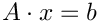, where 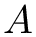 is a square matrix of size 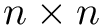 and 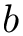 is either a vector of size 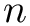 or a matrix of size 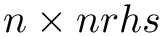. The function minimizes the 2-norm 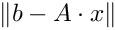 by solving for 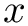.
The result is returned as an allocatable array, and it is either a vector (for a single right-hand side) or a matrix (for multiple right-hand sides).
Arguments
a: Arealmatrix of size representing the coefficient matrix. Ifoverwrite_a = .true., the contents ofamay be modified during the computation.b: Arealvector or matrix representing the right-hand side. The size should be (for a single right-hand side) or (for multiple right-hand sides).cond(optional): A cutoff for rank evaluation. Singular values 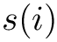 such that 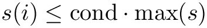 are considered zero.overwrite_a(optional, default =.false.): If.true., bothaandbmay be overwritten and destroyed during computation.rank(optional): An integer variable that returns the rank of the matrix .err(optional): Atype(la_state)variable that returns the error state. Iferris not provided, the function will stop execution on error.
Return value
Returns the solution array with size (for a single right-hand side) or (for multiple right-hand sides).
Errors
- Raises
LINALG_ERRORif the matrix is singular to working precision. - Raises
LINALG_VALUE_ERRORif the matrixaand the right-hand sidebhave incompatible sizes. - If
erris not provided, the function stops execution on error.
Notes
- This function relies on LAPACK's least-squares solvers, such as
*GELSS. - If
overwrite_ais enabled, the original contents ofaandbmay be lost.
det(A)
Type: Function
Description: Determinant of a scalar or square matrix.
Optional arguments:
overwrite_a: Option to let A be destroyed.
err: Return state handler.
inv(A)
Type: Function
Description: Inverse of a scalar or square matrix.
Optional arguments:
err: Return state handler.
pinv(A)
Type: Function
Description: Moore-Penrose Pseudo-Inverse of a matrix.
Optional arguments:
rtol: Optional singular value threshold.
err: Return state handler.
invert(A)
Type: Subroutine
Description: In-place inverse of a scalar or square matrix.
Optional arguments:
err: Return state handler.
Usage: call invert(A, err=err) where A is replaced with $A^{-1}$.
.inv.A
Type: Operator
Description: Inverse of a scalar or square matrix.
Effect: A is replaced with $A^{-1}$.
.pinv.A
Type: Operator
Description: Moore-Penrose Pseudo-Inverse.
Effect: A is replaced with $A^{-1}$.
svd(A)
Type: Subroutine
Description: Singular value decomposition of $A = U S V^t$.
Optional arguments:
s: Singular values.
u: Left singular vectors.
vt: Right singular vectors.
full_matrices: Defaults to.false..
err: State handler.
Usage: call svd(A, s, u, vt, full_matrices=.false., err=state).
svdvals(A)
Type: Function
Description: Singular values $S$ from $A = U S V^t$.
Usage: s = svdvals(A) where s is a real array with the same precision as A.
eye(m)
Type: Function
Description: Identity matrix of size m.
Optional arguments:
n: Optional column size.
mold: Optional datatype (default: real64).
err: Error handler.
eigvals(A)
Type: Function
Description: Eigenvalues of matrix $A$.
Optional arguments:
err: State handler.
eig(A, lambda)
Type: Subroutine
Description: Eigenproblem of matrix $A. \ilinebr<br> **Optional arguments**: \ilinebr<br> -left: Output left eigenvector matrix. \ilinebr<br> -right: Output right eigenvector matrix. \ilinebr<br> -overwrite_a: Option to let A be destroyed. \ilinebr<br> -err`: Return state handler.
eigvalsh(A)
Type: Function
Description: Eigenvalues of symmetric or Hermitian matrix $A$.
Optional arguments:
upper_a: Choose to use upper or lower triangle.
err: State handler.
eigh(A, lambda)
Type: Subroutine
Description: Eigenproblem of symmetric or Hermitian matrix $A. \ilinebr<br> **Optional arguments**: \ilinebr<br> -vector: Output eigenvectors. \ilinebr<br> -upper_a: Choose to use upper or lower triangle. \ilinebr<br> -overwrite_a: Option to let A be destroyed. \ilinebr<br> -err`: Return state handler.
diag(n, source)
Type: Function
Description: Diagonal matrix from scalar input value.
Optional arguments:
err: Error handler.
diag(source)
Type: Function
Description: Diagonal matrix from array input values.
Optional arguments:
err: Error handler.
qr - Compute the QR factorization of a matrix.
Syntax
call qr(a, q, r [, overwrite_a] [, storage] [, err])
Description
This subroutine computes the QR factorization of a real or complex matrix  , where 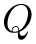 is orthonormal and 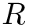 is upper-triangular. The matrix has size
, where 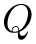 is orthonormal and 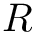 is upper-triangular. The matrix has size ![$ [m,n] $](form_6.png) with 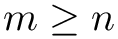. The result is returned in the output matrices and , which have the same type and kind as .
with 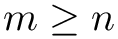. The result is returned in the output matrices and , which have the same type and kind as .
Given 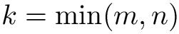, the matrix can be written as:
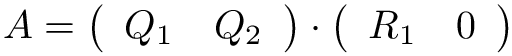
Because the lower rows of are zeros, a reduced problem 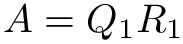 can be solved. The size of the input matrices determines which problem is solved:
- For full matrices (
shape(Q) == [m,m],shape(R) == [m,n]), the full problem is solved. - For reduced matrices (
shape(Q) == [m,k],shape(R) == [k,n]), the reduced problem is solved.
Arguments
a: Arealorcomplexmatrix of size, representing the coefficient matrix. If overwrite_a = .false., this is an input argument. Ifoverwrite_a = .true., it is aninoutargument and is overwritten upon return.q: A rank-2 array of the same type and kind asa, representing the orthonormal matrix . This is an output argument with shape 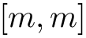 (for the full problem) or 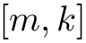 (for the reduced problem).r: A rank-2 array of the same type and kind asa, representing the upper-triangular matrix . This is an output argument with shape (for the full problem) or 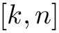 (for the reduced problem).storage(optional): A rank-1 array of the same type and kind asa, providing working storage for the solver. Its minimum size can be determined by a call toqr_space. This is an output argument.overwrite_a(optional, default =.false.): A logical flag that determines whether the input matrixacan be overwritten. If.true., the matrixais used as temporary storage and overwritten to avoid internal memory allocation. This is an input argument.err(optional): Atype(la_state)variable that returns the error state. If not provided, the function will stop execution on error.
Return value
The QR factorization matrices and are returned in the corresponding arguments.
Errors
- Raises
LINALG_VALUE_ERRORif the sizes of the matrices are incompatible with the full/reduced problem. - Raises
LINALG_ERRORif there is insufficient storage space. - If
erris not provided, exceptions will trigger anerror stop.
Notes
- This subroutine computes the QR factorization using LAPACK's QR decomposition algorithm
*GEQRF. - If
overwrite_ais enabled, the input matrixawill be modified during computation.
qr_space - Workspace size for QR operations.
Syntax
call qr_space(a, lwork [, err])
Description
This subroutine computes the minimum workspace size required for performing QR factorization. The size of the workspace array needed for both QR factorization and solving the reduced problem is determined based on the input matrix .
The input matrix has size , and the output value 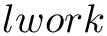 represents the minimum size of the workspace array that should be allocated for QR operations.
Arguments
a: Arealorcomplexmatrix of size, representing the input matrix used to determine the required workspace size.lwork: An integer variable that will return the minimum workspace size required for QR factorization.err(optional): Atype(la_state)variable that returns the error state. If not provided, the function will stop execution on error.
Return value
The workspace size that should be allocated before calling the QR factorization routine is returned.
Errors
- Raises
LINALG_ERRORif there is an issue determining the required workspace size. - If
erris not provided, exceptions will trigger anerror stop.
Notes
- This subroutine is useful for preallocating memory for QR factorization in large systems.
- It is important to ensure that the workspace size is correctly allocated before proceeding with QR factorization to avoid memory issues.
BLAS, LAPACK
Modern Fortran modules with full explicit typing features are available as modules la_blas and la_lapack. The reference Fortran-77 library, forked from Release 3.10.1, was automatically processed and modernized. The following refactorings are applied:
- All datatypes and accuracy constants standardized into a module (
stdlib-compatible names) - Both libraries available for 32, 64 and 128-bit floats
- Free format, lower-case style
implicit none(type, external)everywhere- all
pureprocedures where possible intentadded to all procedure arguments- Removed
DO 10 .... 10 CONTINUE, replaced withdo..end doloops or labelledloop_10: do ... cycle loop_10 ... end do loop_10in case control statements are present - BLAS modularized into a single-file module
- LAPACK modularized into a single-file module
- All procedures prefixed (with
stdlib_, currently). - F77-style
parameters removed, and numeric constants moved to the top of each module. - Ambiguity in single vs. double precision constants (
0.0,0.d0,(1.0,0.0)) removed - preprocessor-based OpenMP directives retained.
The single-source module structure hopefully allows for cross-procedural inlining which is otherwise impossible without link-time optimization.
Building
An automated build is currently available via the Fortran Package Manager. To add fortran-lapack to your project, simply add it as a dependency:
fortran-lapack is compatible with the LAPACK API. If high-performance external BLAS/LAPACK libraries are available, it is sufficient to define macros
Extension to external BLAS/LAPACK libraries
Generic interfaces to most BLAS/LAPACK functions are exposed to modules la_blas and la_lapack. These interfaces drop the initial letter to wrap a precision-agnostic version. For example, axpy is a precision-agnostic interface to saxpy, daxpy, caxpy, zaxpy, qaxpy, waxpy. The naming convention is:
| Type | 32-bit | 64-bit | 128-bit |
|---|---|---|---|
| real | s | d | q |
| complex | c | z | w |
All public interfaces in la_blas and la_lapack allow seamless linking against external libraries via a simple pre-processor flag. When an external library is available, just define macros LA_EXTERNAL_BLAS and LA_EXTERNAL_LAPACK. The kind-agnostic interface will just point to the external function. All such interfaces follow this template:
Licensing
LAPACK is a freely-available software package. It is available from netlib via anonymous ftp and the World Wide Web. Thus, it can be included in commercial software packages (and has been). Credit for the library should be given to the LAPACK authors. The license used for the software is the modified BSD license. According to the original license, we changed the name of the routines and commented the changes made to the original.
Acknowledgments
Part of this work was supported by the Sovereign Tech Fund.